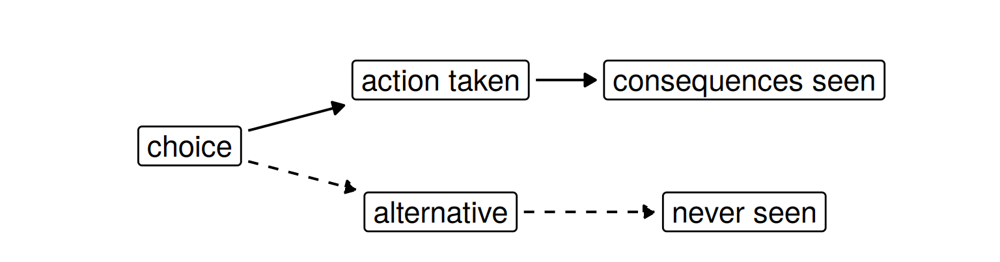
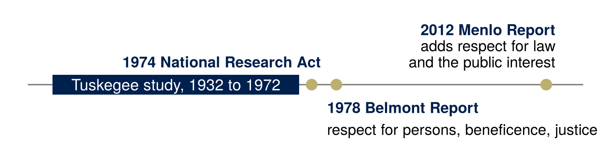
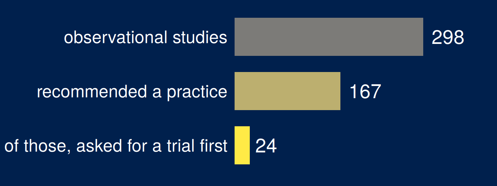
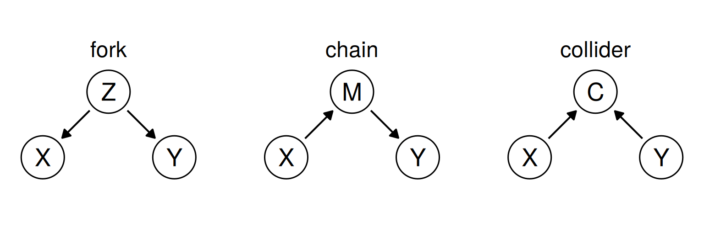
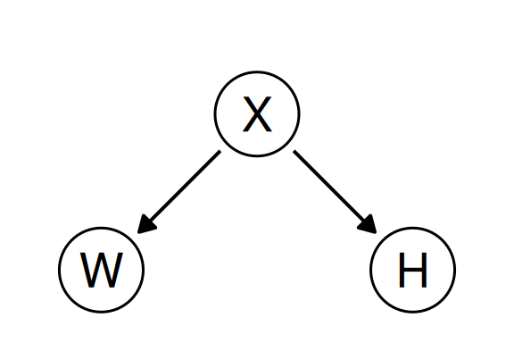
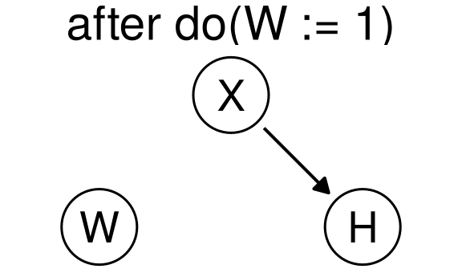
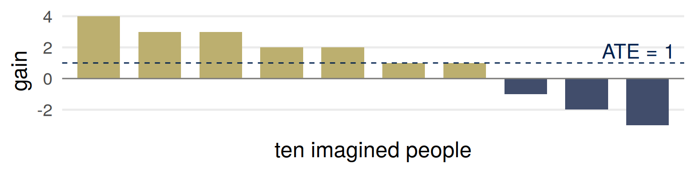
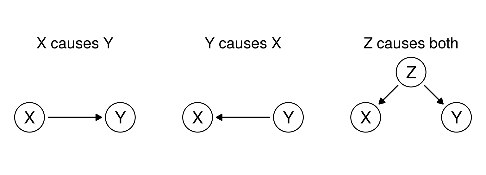
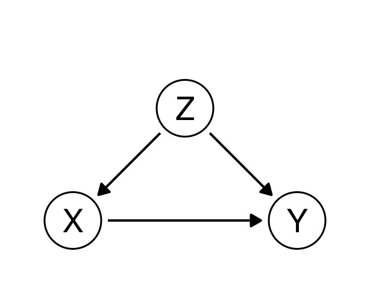
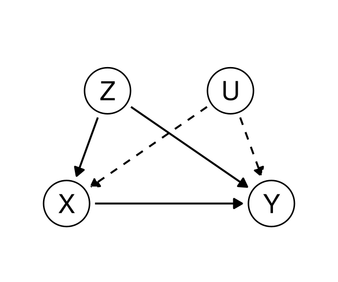

Part 1: Normative and applied ethics
Part 2: Causal models
Part 3: Confounding and adjustment
| judges an action by | a difficulty | |
|---|---|---|
| Consequentialism | its effects | predicting consequences |
| Deontology | whether it follows a rule or a duty | a rule kept where it leads somewhere terrible |
| Virtue ethics | the character it expresses | virtues conflict |
| Pragmatic ethics | norms held like hypotheses, revised by inquiry | how people judge, or how they should? |
These approaches are not mutually exclusive or exhaustive, so we do not have to choose one of them or limit our thinking to using only these ideas.
ms4ds, section 3.2.2 (the last line) and sections 3.2.2.1 to 3.2.2.3 (the first three rows); Wikipedia, Deontology and Pragmatic ethics.
A hospital is deciding whether to use a model to choose which patients get a follow-up call after discharge.
Which framework is each argument using? Which of them would you need data to settle?
An act is right “if and only if the act […] will produce, will probably produce, or is intended to produce, a greater balance of good over evil than any available alternative.”
Wikipedia, Consequentialism.

Causal understanding is necessary to apply consequentialism.
ms4ds, section 3.4.
Bentham and Mill: choose the action that does the most good, adding up everyone’s happiness.
| a difficulty | in data science |
|---|---|
| defining utility | choosing the outcome, the metric or the loss |
| trading off between people | adding gains and losses across people |
| judging acts or rules | one decision, or the model that makes them all |
| predicting consequences | effects of actions, not associations |
ms4ds, section 3.2.2.1 (the four difficulties); Wikipedia, Consequentialism.
Data science is usually framed (perhaps implicitly) as utilitarian because of its focus on prediction/causation (consequences) and optimization (utility).
ms4ds, section 3.2.2, discussion questions.
Choose a data science task: a recommender, a credit score, an A/B test. Say it in utilitarian language: whose good, measured how, added up over who? Then give one objection a deontologist or a virtue ethicist would make.

In the Tuskegee study, Black men with syphilis were never told they had it and were kept from treatment after penicillin was known to work.
Beneficence, in the Menlo Report’s words: “Do not harm; Maximize probable benefits and minimize probable harms; Systematically assess both risk of harm and benefit.”
ms4ds, section 3.3.1, which quotes the Menlo Report (2012); Wikipedia, Belmont Report.
| asks | |
|---|---|
| Consent | did people explicitly agree, knowing what will be collected and what for? |
| Clarity | do they understand what their consent allows? |
| Consistency and trust | does the system behave as people expect? |
| Control and transparency | can they see the status of their data, and opt in or out of particular uses later? |
| Consequences | what unintended harm could the data do, to children for example, or by linking sources to identify people? |
Loukides, Mason and Patil, Ethics and Data Science, as summarized in ms4ds, section 3.3.2.

Prasad, Jorgenson, Ioannidis and Cifu (2013), Journal of Clinical Epidemiology 66, 361–366: the 298 eligible observational studies among the 631 original articles of 2010 in the New England Journal of Medicine, Lancet, JAMA and Annals of Internal Medicine.
“a sequence of assignments for generating a joint distribution starting from independent noise variables.”

\(Z\) a common cause, \(M\) a mediator, \(C\) a common effect.
fairmlbook, chapter 5, “Causal models” and “Causal graphs.”
\(U_1 \sim \mathrm{Ber}(1/2)\), \(\;U_2, U_3 \sim \mathrm{Ber}(1/3)\), independent; \(\mathrm{Ber}(q)\) is 1 with probability \(q\).

Apart from the noise, an arrow into a variable comes from each variable its line uses: \(W\) and \(H\) are both computed from \(X\).
Compute \(P(H = 1)\) and \(P(H = 1 \mid W = 1)\).
fairmlbook, chapter 5, “A first example.”
\(P(H = 1) = \tfrac12 \cdot \tfrac13 = \tfrac16\), \(\qquad P(H = 1 \mid W = 1) = \tfrac13\).
\(do(W := 1)\): replace line 2 by \(W := 1\). In the graph, the arrow into \(W\) is deleted.
\(P(H = 1 \mid do(W := 1)) = \tfrac16\).

“The substitution \(W := 1\) does not correspond to a conditioning on \(W = 1\). One is an action, albeit inconsequential in this case.”
\(X\) and \(Y\) are confounded when \(P(Y = y \mid do(X := x)) \ne P(Y = y \mid X = x)\).
fairmlbook, chapter 5, “A first example” and “Confounding.”
\[ \text{ATE} = E[Y \mid do(X := 1)] - E[Y \mid do(X := 0)] \]
\(X\) set to 1 for everyone, against \(X\) set to 0 for everyone, with the arrows into \(X\) deleted.
\[ E[Y \mid X = 1] - E[Y \mid X = 0] \]
The observed difference: the people who happened to be treated, against those who were not.
“Causal effects are population quantities.”
fairmlbook, chapter 5, “Causal effects.”
If gains add up across people, and nobody’s outcome depends on anyone else’s treatment, treating all \(n\) rather than none changes the expected total by \(n \times \text{ATE}\): the utilitarian’s comparison.

Belmont’s justice: who gets the benefits of research, and who bears its burdens? For a policy, what would you need besides the ATE?
Wikipedia, Belmont Report.

“If we expect a model to also tell us what happens when we intervene on variables, then […] models with equal predictive accuracy are no longer equivalent. We become responsible to choose one of them.”
Figure 1 of Loftus (2024), “Position: The Causal Revolution Needs Scientific Pragmatism,” ICML.
A job center refers some of the 1,000 people registered with it to a job-search course. Everyone referred attends, and nobody else does. Six months later:
| attended | did not attend | |
|---|---|---|
| 1,000 people | 320 of 500 in work (64%) | 180 of 500 in work (36%) |
How much does the course raise the chance of being in work? Write down a number, or what else you would need to know.
A press release says the course raises the chance of being in work by 28 percentage points.
The gold arrow is the claim that the course helps people find work. The two black arrows can produce a difference between attenders and non-attenders without it.
| attended (\(X = 1\)) | did not (\(X = 0\)) | |
|---|---|---|
| worked last year (\(Z = 1\)), 500 | 280 of 400 in work (70%) | 60 of 100 (60%) |
| did not (\(Z = 0\)), 500 | 40 of 100 in work (40%) | 120 of 400 (30%) |
| total, 1,000 | 320 of 500 in work (64%) | 180 of 500 (36%) |

\(Z\) = worked last year, \(X\) = attended the course, \(Y\) = in work six months later.
\(Z\) worked last year, \(X\) attended, \(Y\) in work. \(do(X := 1)\) deletes the arrow \(Z \to X\), and \(Z\) keeps its distribution:
\[ \begin{aligned} E[Y \mid do(X := 1)] &= \sum_z E[Y \mid X = 1, Z = z]\,P(Z = z) \\ &= 0.7 \times 0.5 + 0.4 \times 0.5 = 0.55 \\ E[Y \mid do(X := 0)] &= 0.6 \times 0.5 + 0.3 \times 0.5 = 0.45 \end{aligned} \]
The average treatment effect is \(0.10\).
\(P(Y = y \mid do(X := x)) = \sum_z P(Y = y \mid X = x, Z = z)\,P(Z = z)\) when \(Z\) satisfies the backdoor criterion (later in the lecture), and every value of \(Z\) includes people with \(X = x\).
\(Z\) worked last year, \(X\) attended, \(Y\) in work. Each row is weighted by its share of attenders, or of non-attenders:
\[ \begin{aligned} P(Y = 1 \mid X = 1) &= \frac{0.7 \times 400 + 0.4 \times 100}{500} = 0.64 \\ P(Y = 1 \mid X = 0) &= \frac{0.6 \times 100 + 0.3 \times 400}{500} = 0.36 \end{aligned} \]
Attenders come mostly from the \(Z = 1\) row, where more people find work whether or not they attend.
Same people, same rows. The center now refers half of each row, chosen at random; everyone referred attends, and nobody else does.
Compute the share in work you would expect among those who attended, and among those who did not. Compare the difference with the average treatment effect.
Half of each row attends, chosen at random. The shares to expect:
\[ \begin{aligned} P(Y = 1 \mid X = 1) &= 0.5 \times 0.7 + 0.5 \times 0.4 = 0.55 \\ P(Y = 1 \mid X = 0) &= 0.5 \times 0.6 + 0.5 \times 0.3 = 0.45 \end{aligned} \]
The difference to expect is \(0.55 - 0.45 = 0.10\), the average treatment effect. Any one randomization gives a difference near \(0.10\), and a different random draw would give a slightly different number.
“The goal of a randomized controlled trial is to break natural inclination.”
fairmlbook, chapter 5, “Randomization.”
A backdoor path from \(X\) to \(Y\) starts with an arrow into \(X\): here, \(X \leftarrow Z \to Y\).
\(Z\) satisfies the backdoor criterion if
A path through a fork or a chain is blocked by conditioning on the variable in the middle.
Controlling for a mediator “will eliminate some of the causal influence of \(X\) on \(Y\).”
The criterion: Pearl (2009), Causality, as cited in fairmlbook, chapter 5. The quotation: fairmlbook, chapter 5, “Confounding.”

\(U\): something unmeasured, such as motivation, that pushes people onto the course and into work.
Under the graph without \(U\), adjusting for \(Z\) gives the effect. Under this one, the back door through \(U\) stays open, and the 10 points probably overstates the effect.
The data on \(X\), \(Y\) and \(Z\) fit both graphs.
…and why?
Does consequentialism become more or less defensible once you have to write the causal model down?
For next time: bring one score or algorithm used to make decisions about people, with what it measures and what it stands in for.